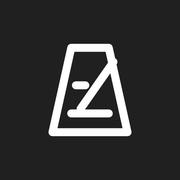
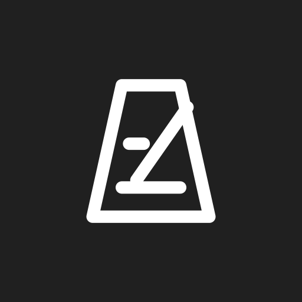

01
Logo 主檔與排列


03
分頁、手機與播放圖示
32px favicon

Apple touch icon
Maskable 圓形示意Now Playing
圖示版本均包含在 assets/brand/icons。播放封面與 Apple 180px 圖示沿用原本兩個檔案；圓形裁切僅為預覽示意。
全部 49 個圖檔
- assets/brand/svg/tempolive-mark-dark.svg
- assets/brand/png/tempolive-mark-dark-512.png
- assets/brand/png/tempolive-mark-dark-1024.png
- assets/brand/png/tempolive-mark-dark-2048.png
- assets/brand/svg/tempolive-logo-horizontal-dark.svg
- assets/brand/png/tempolive-logo-horizontal-dark-2400.png
- assets/brand/svg/tempolive-logo-bilingual-dark.svg
- assets/brand/png/tempolive-logo-bilingual-dark-2400.png
- assets/brand/svg/tempolive-logo-stacked-dark.svg
- assets/brand/png/tempolive-logo-stacked-dark-1200.png
- assets/brand/svg/tempolive-logo-wordmark-dark.svg
- assets/brand/png/tempolive-logo-wordmark-dark-2400.png
- assets/brand/svg/tempolive-mark-white.svg
- assets/brand/png/tempolive-mark-white-512.png
- assets/brand/png/tempolive-mark-white-1024.png
- assets/brand/png/tempolive-mark-white-2048.png
- assets/brand/svg/tempolive-logo-horizontal-white.svg
- assets/brand/png/tempolive-logo-horizontal-white-2400.png
- assets/brand/svg/tempolive-logo-bilingual-white.svg
- assets/brand/png/tempolive-logo-bilingual-white-2400.png
- assets/brand/svg/tempolive-logo-stacked-white.svg
- assets/brand/png/tempolive-logo-stacked-white-1200.png
- assets/brand/svg/tempolive-logo-wordmark-white.svg
- assets/brand/png/tempolive-logo-wordmark-white-2400.png
- assets/brand/svg/tempolive-icon-dark.svg
- assets/brand/png/tempolive-icon-dark-1024.png
- assets/brand/svg/tempolive-icon-light.svg
- assets/brand/png/tempolive-icon-light-1024.png
- apple-touch-icon.png
- tempolive-cover.png
- favicon.svg
- assets/brand/icons/favicon-16x16.png
- assets/brand/icons/favicon-32x32.png
- assets/brand/icons/favicon-48x48.png
- favicon.ico
- assets/brand/icons/icon-192.png
- assets/brand/icons/maskable-icon-192.png
- assets/brand/icons/icon-512.png
- assets/brand/icons/maskable-icon-512.png
- assets/brand/icons/apple-touch-icon-152.png
- assets/brand/icons/apple-touch-icon-167.png
- assets/brand/social/github-social-preview.svg
- assets/brand/social/github-social-preview.png
- assets/brand/social/og-image.svg
- assets/brand/social/og-image.png
- assets/brand/social/readme-banner-light.svg
- assets/brand/social/readme-banner-light.png
- assets/brand/social/readme-banner-dark.svg
- assets/brand/social/readme-banner-dark.png


這是標誌素材預覽，不是節拍器網頁。網站本身並未修改；額外圖示使用需配合引用設定。